四国を代表する仁淀川。
今や仁淀ブルーと言われる程、透明度の高い清流として多くの観光客が訪れるスポットだ。
そんな仁淀川の河口近くにある仁淀川大橋の近くにこじんまりとした神社？お寺？がある。その名は「おみろく様」。
正式には「弥勒大明神」という。
弥勒で大明神？と疑問に思う方も多かろう。
しかしここは民間信仰独特の神仏習合の霊場なので仏教とか神道とか細かいジャンル分けは全く意味を成さないのである。
重要なのはこのおみろく様が近在の人々の篤い信仰を集めている事。
その証拠にある奉納物が大量に納められているのだ。
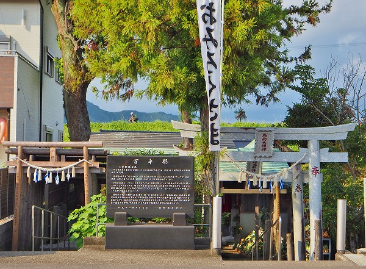おみろく様の外観。
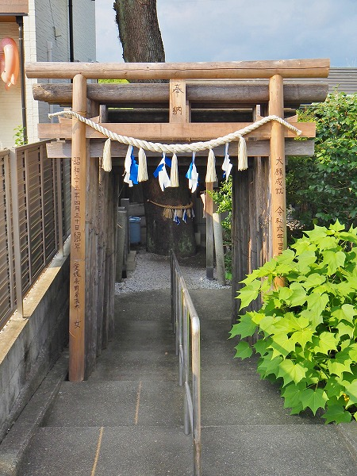
鳥居が並んでおり、外からは神社風だ。
背後には仁淀川の土手が見える。
参拝後、土手から仁淀川を眺めてみたが河口まで5キロとは思えないほど透明度の高い水が流れていた。
正に四国の秘宝といえる清流であった。
記念碑によると明治３２年の台風でこの辺りの堤が決壊した際、近在の人が堤近くで流された祠を発見し、個人的に蔵の中で祭ったのだという。
その後、信仰する人が増えてきたため昭和５５年に近在の人々で氏子を組織し、運営するに至ったのだ。
左右に鳥居があるが左側の鳥居を見てみる。
鳥居には愛媛県の人が奉納したと記されている。
高知のローカルな民間信仰（そもそも個人的に祀られていた神様だし）かと思ったら案外広い信仰圏を有していることが判り、チョットびっくりした。
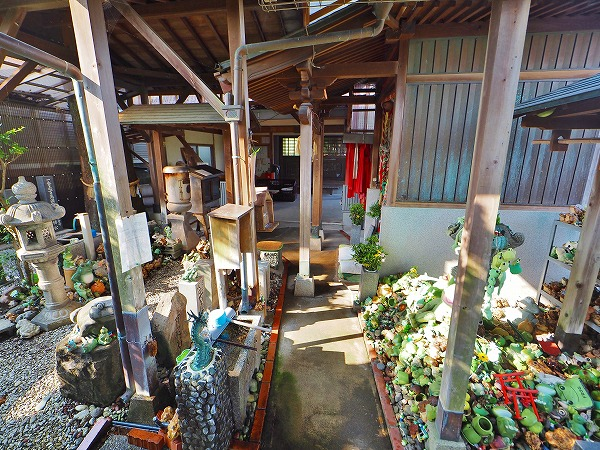
で、右側の鳥居を潜るとそこにはにわかに信じられない光景が飛び込んできた。
さして広くない境内のかなりの部分がカエルの人形に占拠されているのだ！
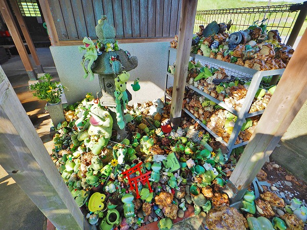
一体何がどうしてこうなったのか。
全く判らないままにただただ唖然とカエルの人形を眺めるばかり。
中にはミニ鳥居まで奉納してある。
ここが神仏習合、というより神でも仏でもどっちでもいい、いわばカエル教とも言うべき特殊な信仰の場なのだ。
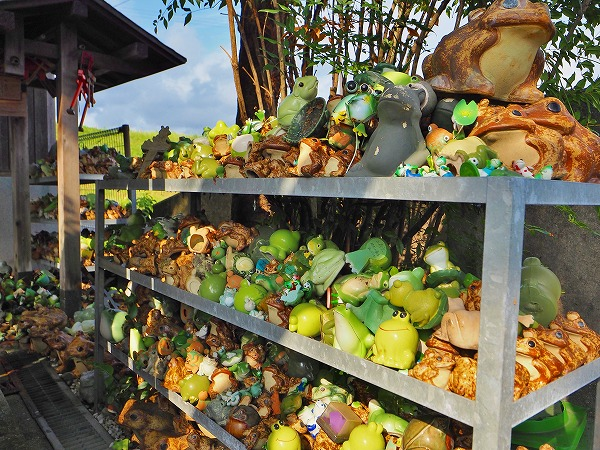
境内には幾つかの棚があり、そこにも溢れんばかりのカエルの人形や置物がうず高く積まれている。
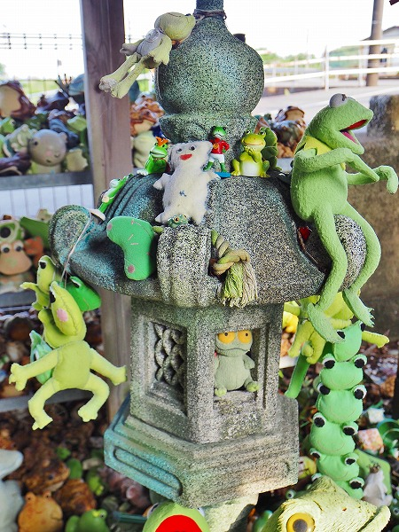
それにしてもカエルの人形やぬいぐるみ、置物にこんなに種類があるとは思わなかった。
恐らく奉納されているカエルはほとんど既製品と思われる。
中には手作りのぬいぐるみもチラホラあるがほとんどは街のファンシーショップなどで売っているようなものばかりだ。
改めて世の中にたくさんのカエルグッズが流通していることを実感しましたよ。
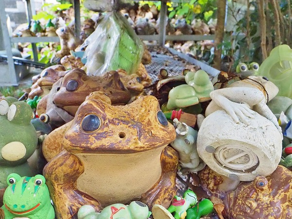
なぜこのようにカエルグッズがたくさん奉納されているのか？
実はこのおみろく様はイボに御利益がある神様とされているのだ。
川から流れてきた社を蔵で祭っていた頃、家族に「いびら」（土佐の方言でイボの事）が多く出ていたという。
その時、蔵に祭ってあった御神体から「仁淀川近くに祭って欲しい」とのお告げがあったので今の場所に社を造ったら家族のイボが平癒したという言い伝えがある。
その後、おみろく様は「いびらの神様」として人々の間に知れ渡るようになったのだという。
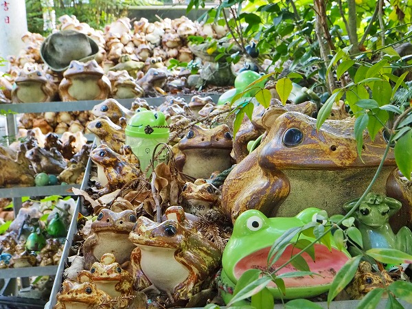
陶器のカエルが大量に奉納されている。
元々はこの陶器のカエルの奉納が多かったのだろう。
イボ取りとイボガエルを引っ掛けてイボが治った人が奉納したのがきっかけとされている。
このような民間信仰の奉納物には深い意味はない場合が多い。
ここのカエル奉納も最初は軽い駄洒落ノリだったと考えられる。
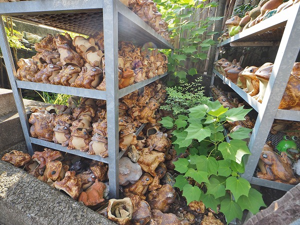
棚にびっしり並んだカエルの置物。
駄洒落だろうが何だろうが、イボに困っている人にとっては切実な思いを抱えている事には違いない。
恐らく本当にイボに困った人が藁をも掴む思いでここに参拝に来たのだろう。
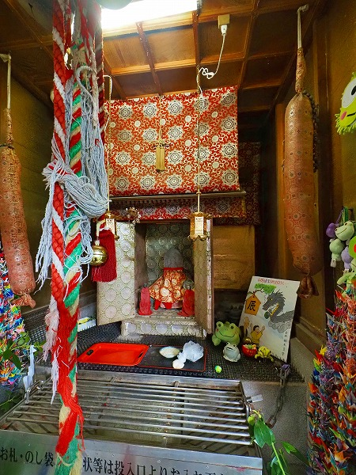
カエルの群れを過ぎると祭壇のようなものが現れた。
コレがかつて洪水で流れ着いた社なのだろうか。
綺麗になっていたので作り直されたのだろう。
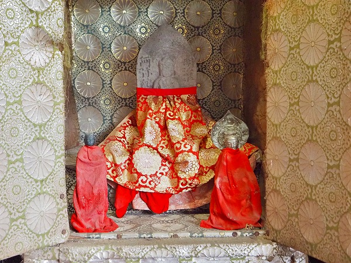
祭壇の中には石像が祭られていた。
コレがおみろく様なのか・・・と思ったてよく見たら阿弥陀って書いてあるじゃないの！
普通、祭壇があって石仏があったら名前からして絶対弥勒菩薩が祭られていると思うじゃないですか。
なのに何故に阿弥陀サマなの？
割り切れぬ思いで祭壇の前でしばし呆然とする。
民間信仰、フリーダム過ぎるぞっ！
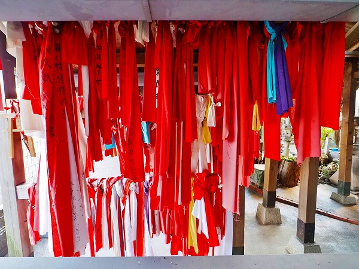
祭壇の脇にはたくさんの赤い布が下がってていた。
これも願いが叶った御礼に奉納されたものだろう。
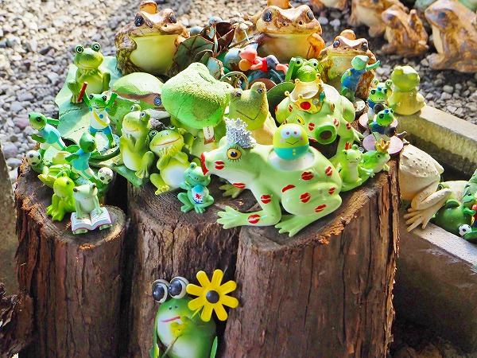
奉納されたカエルはどんどん増殖している。
それにしても同じカエルがほとんどないのが凄い。
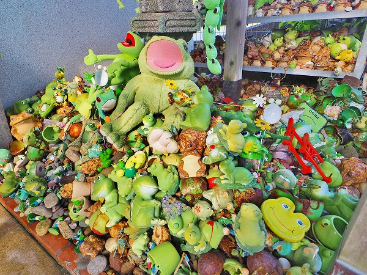
こちらもカエルのモッシュ状態。
一応、屋根は架かっているものの壁はないので、強い台風などが来たら吹き曝しになってしまうであろう。
それでもぬいぐるみなどが腐食していない、ということは定期的にお焚き上げのような事をしているのだろうか？
それともおみろくパワーで傷まないのだろうか？？
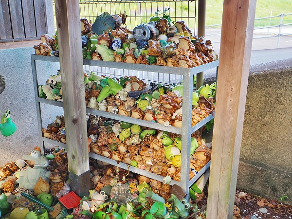
こうしてみていると日本のカエルグッズがある時期から茶色から緑色に変化していることが良く判る。
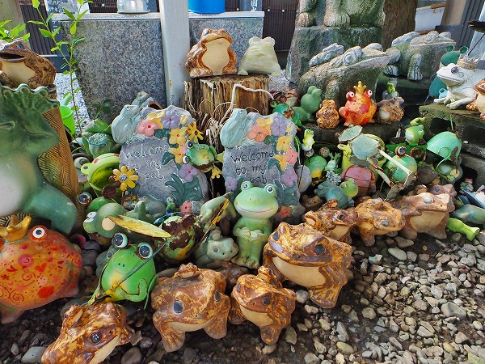
元々イボガエルやウシガエルのような種類がメインだったのだろうが、今ではアマガエルなど緑色の種が人々のイメージするカエル像となったのだ。
と同時にファンタジー色が強くなり、人々にカワイイ生き物と認識されるようになったのだ。
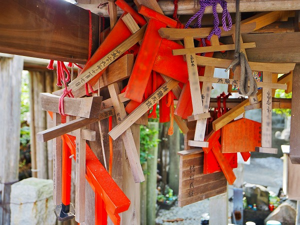
ミニ鳥居の奉納。
カエルグッズばかりが目立つが、先程の赤い布やこのミニ鳥居などオーソドックスな奉納物も残っているのはカエルが奉納される以前はこのような奉納物がメインだったからだろう。
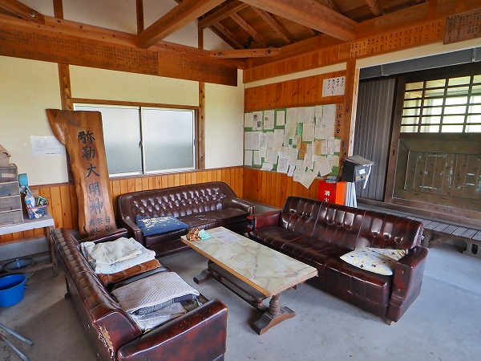
一番奥には応接室のような休憩所のようなスペースがあった。
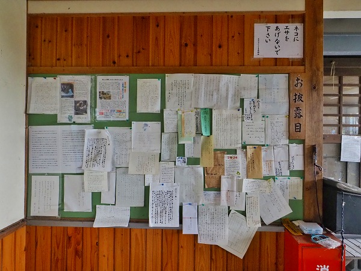
その一画にはたくさんの手紙が貼られていた。
「お披露目」とある。全国からの感謝の手紙なのだ。
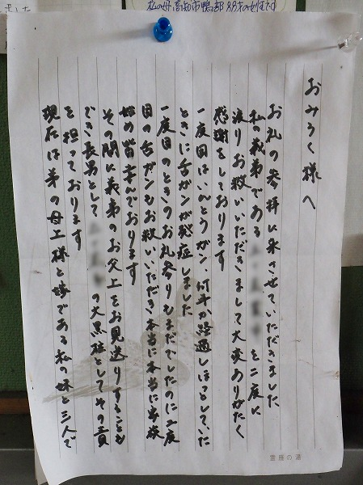
癌が治った御礼の手紙。
今やおみろく様はイボだけでなく癌の神様としてもその名を馳せているのであった。
確かにイボよりも癌の方が深刻な問題だ。
してみるとここにあるカエルグッズの多くは癌が治った御礼に奉納されたものなのだろうか？
一見、ファンシーで微笑ましいカエルグッズの群れだが、その奥には真剣な願いが込められていたのかも知れない。
と思うとカワイイカエルの表情も少し違って見えてくるから不思議だ。
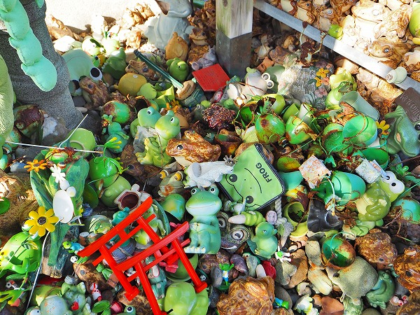
改めてうず高く積まれたカエルの山を見てみる。
それにしても御本尊のおみろく様はどこにいるのだろう？
もしかしてもしかしたら・・・このカエルグッズの山の中に埋もれていたりして・・・（個人の妄想です）<